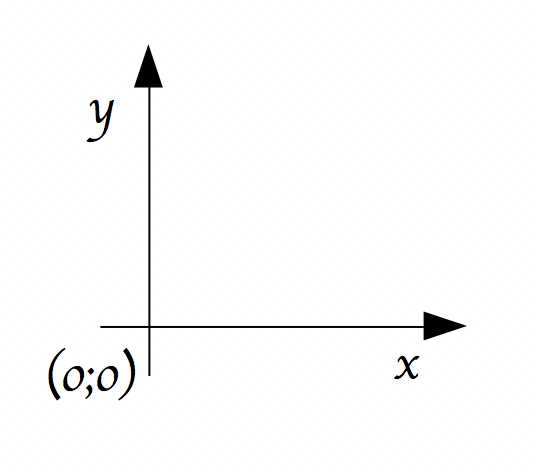

import pygame
from pygame.locals import *
pygame.init()Interface graphique avec Pygame
CLI vs GUI
CLI: Command-line interface
Ce que nous utilisions: print() et input()
GUI: Graphical user interface
On peut interagir de façon graphique: click de souris, touches du clavier, etc.
CLI vs GUI ?
Contrairement à ce que l’on pourrait croire, la « majorité » des programmes ont une CLI mais pas de GUI.
Pygame
Pour obtenir une interface graphique, nous allons utiliser le module pygame.
Pour l’importer et l’utiliser:
Premier jeu
import pygame
from pygame.locals import *
pygame.init()
affi_surface = pygame.display.set_mode((800, 600))
pygame.display.set_caption("Mon premier jeu !")
while True:
for event in pygame.event.get():
if event.type == QUIT:
pygame.quit()
pygame.display.update()affi_surface = pygame.display.set_mode((800, 600))Permet de créer une surface dans laquelle nous allons pouvoir dessiner. Correspond à la zone noire pour le moment.
Sa taille est de 800 pixels de large, 600 de haut.
while True:
for event in pygame.event.get():
if event.type == QUIT:
pygame.quit()
pygame.display.update()Nous avons besoin d’une boucle qui demande en permanence si l’utilisateur a fait quelque chose.
Un peu comme si le programme faisait:
Hey ? tu fais quoi ?!?
Hey ? tu fais quoi ?!?
Hey ? tu fais quoi ?!?
Hey ? tu fais quoi ?!?
Hey ? tu fais quoi ?!?
Hey ? tu fais quoi ?!?
Hey ? tu fais quoi ?!?
Hey ? tu fais quoi ?!?
Hey ? tu fais quoi ?!?
...if event.type == QUIT:
pygame.quit()Ici nous réagissons à un événement, l’événement appuyer sur la croix quitter.
Nous réagissons en quittant le jeu…
pygame.display.update()Affiche les modifications apportées à la fenêtre d’affichage.
Un premier vaisseau spatial !
Nous allons essayer de créer un jeu dans lequel nous conduisons un vaisseau spatial devant éviter différents obstacles.
THE vaisseau
blanc = (255,255,255)
rouge = (255,0,0)
def vaisseau(x,y):
rect_vaisseau = pygame.Rect(x, y, 80, 40)
pygame.draw.rect(affi_surface, rouge, rect_vaisseau)
while True:
for event in pygame.event.get():
if event.type == QUIT:
pygame.quit()
vaisseau(360,500)
pygame.display.update()Le vaisseau est un rectangle…
rect_vaisseau = pygame.Rect(x, y, 80, 40)Nous définissons une surface rectangulaire, de 80 pixel de large et 40 pixel de haut.
Le coin haut gauche du rectangle est le point de coordonnées cartésiennes \((x;y)\)
dessiné
pygame.draw.rect(affi_surface, rouge, rect_vaisseau)Cette commande permet de dessiner notre vaisseau rectangle dans notre surface d’affichage.
en rouge
Pygame ne propose pas de couleurs prédéfinies.
On peut cependant définir des couleurs à partir de leur code RGB
rouge = (255,0,0)en bas ?
vaisseau(360,500)L’abscisse du coin haut gauche du vaisseau rectangle est de 360 et son ordonnée 500. Avec une ordonnée de 500, il devrait en haut pas en bas, non ?
Non
Les informaticiens commencent à compter à partir de 0 et mettent le bas en haut.
Mathématiques:

Informatique:

Déplacer le vaisseau
x = 360
y = 550
while True:
for event in pygame.event.get():
if event.type == QUIT:
pygame.quit()
y_change = -5
y = y + y_change
vaisseau(x,y)
pygame.display.update()Le vaisseau ne se déplace pas ?
Rien ne se déplace jamais dans un écran
Les personnages de jeux video ne se déplacent pas !
Il n’y a que des pixels qui changent de couleur
La solution:

En pratique:
On peint tout en blanc
On dessine un rectangle rouge
On affiche le tout
On repeint tout en blanc, l’ancien rectangle rouge a disparu
On dessine un rectangle rouge quelques pixels au dessus du précédent
On affiche le tout
….
x = 360
y = 550
while True:
for event in pygame.event.get():
if event.type == QUIT:
pygame.quit()
y_change = -5
y = y + y_change
affi_surface.fill(blanc)
vaisseau(x,y)
pygame.display.update()FPS
FPS: Frames per second, nombre d’images par seconde
Un jeu est donc une suite d’image à l’écran.
Comme notre vaisseau se déplace à chaque image, le nombre d’image par seconde influe sur la « vitesse » de notre vaisseau.
fps = 30
fps_clock = pygame.time.Clock()
x = 360
y = 550
while True:
for event in pygame.event.get():
if event.type == QUIT:
pygame.quit()
y_change = -5
y = y + y_change
affi_surface.fill(blanc)
vaisseau(x,y)
pygame.display.update()
fps_clock.tick(fps)Attention, pour chaque affichage d’image, des calculs sont effectués, ces calculs prennent du temps, et s’ils prennent trop de temps, il n’est pas possible d’obtenir le FPS voulu.
Piloter le vaisseau
Au clavier !
x, y = 360, 550
x_change, y_change = 0, 0
while True:
for event in pygame.event.get():
if event.type == QUIT:
pygame.quit()
if event.type == pygame.KEYDOWN:
if event.key == pygame.K_LEFT:
x_change = -5
affi_surface.fill(blanc)
x, y = x + x_change, y + y_change
vaisseau(x,y)
pygame.display.update()
fps_clock.tick(fps)Observez bien, quel est le problème ?
La solution
if event.type == pygame.KEYUP:
if event.key == pygame.K_LEFT or event.key == pygame.K_RIGHT:
x_change = 0